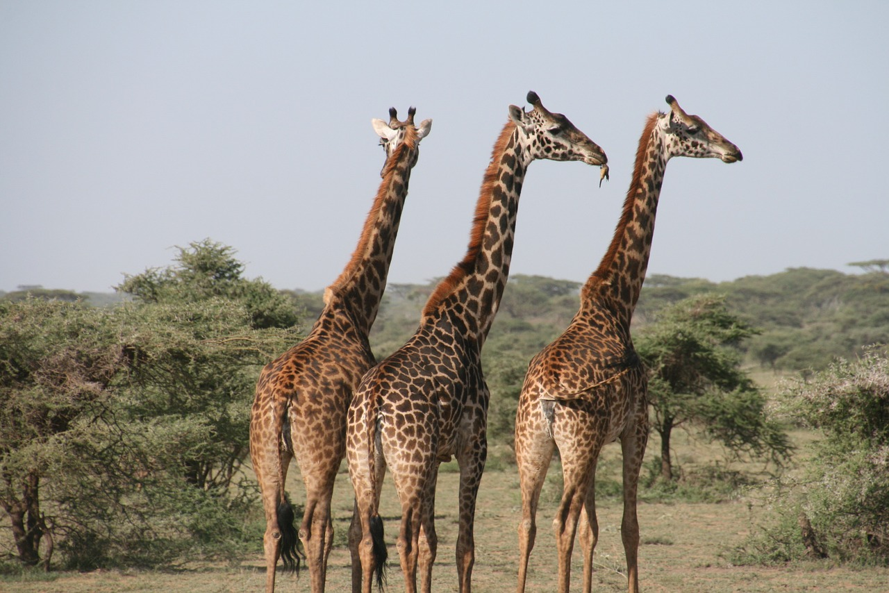
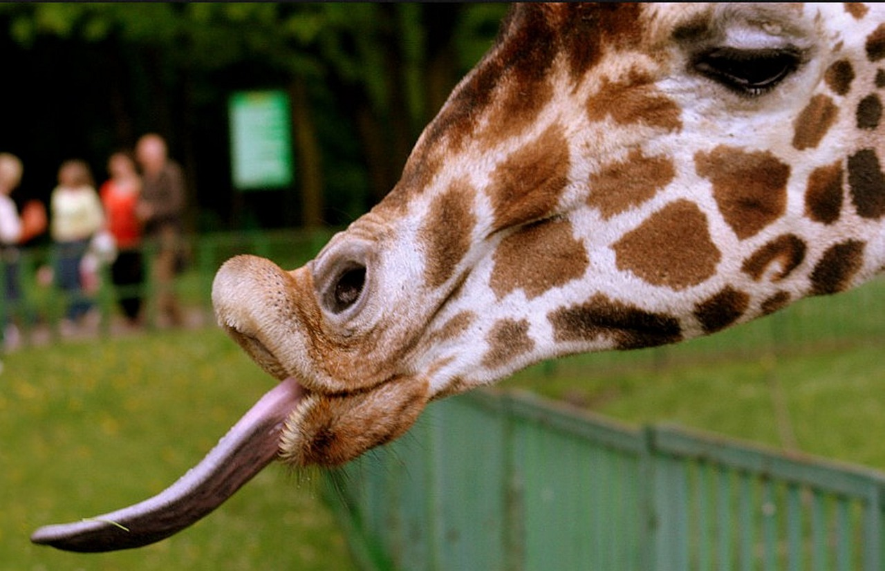

1.分類
学名︰Giraffa camelopardalis
哺乳綱偶蹄目（鯨偶蹄目とする説もあり）キリン科キリン属に分類される偶蹄類。
体色は橙褐色や赤褐色・黒と、淡黄色からなる斑紋が入り、この斑紋は個体変異がある。種小名camelopardalisは、「ヒョウ模様のラクダ」を意味する。
2.身体的特徴
長さ約45センチメートルに達する舌を持ち、柔軟性のある唇も合わせて木の枝にある棘を避けながら採食を行うことができる。多くの哺乳類と同様に頸椎の数は7個であるが、それぞれが大型かつ長い。
オス、メスともに頭に5本の皮膚におおわれた角がある。心臓から脳までの高低差は約2mある。脳まで血流を押し上げる為、動物の中で最も高い血圧を有するが、後頭部の「ワンダーネット（奇驚網）」と呼ばれる網目状の毛細血管が、急激な血圧の変化を吸収している。
3.生態的特徴
構成や個体数が変動する繋がりの緩い10 - 20頭程度の群れで生活している。19世紀から20世紀初頭では20～30頭の群れの報告例があるが、2000年代以降は群れは平均6頭以下とする報告例もある。
通常は直立したまま休息や睡眠を行うが、安全が確保されていれば2～3時間にわたり座って休むこともある。前肢と片方の後肢を内側に曲げて地面に座り、眠りが深くなると首は丸めて体に乗せる。
4.食性／繁殖
食性
食性は植物食で、主にアカシア属・シクンシ科などの木の葉、若芽、小枝などを食べるが、果実や草本を食べることもある。アカシアなどの棘のある食物は舌や唇でよりわけ、口内では粘着性の唾液で覆ったあと溝のある口蓋で押しつぶして飲み込む。
繁殖
妊娠期間は453～464日。出産間隔は平均20か月。出産時に幼獣は2メートルの高さから落下することになるが、長い体が弓状にしなることで落下の衝撃を和らげている。
5.生息分布
アフリカ大陸のアンゴラ、ウガンダ、エチオピア、カメルーン北部、ケニア、コンゴ民主共和国北東部などに生息。マリ共和国では絶滅したと考えられ、エリトリア、ギニア、セネガル、ナイジェリア、モーリタニアでも絶滅したと考えられている。
6.起源／歴史
中国では『明成祖実録』よりベンガルの遣使から本種を麒麟として永楽帝に献上したとされ、『榜葛刺進麒麟図』に本種が描かれている。
森林伐採や農地開発・土地開発などによる生息地の破壊、干ばつ、食用や皮用の密猟などにより生息数は減少している。種全体としては減少傾向にあると推定されている一方で、南部や西部の個体群は増加傾向にある。